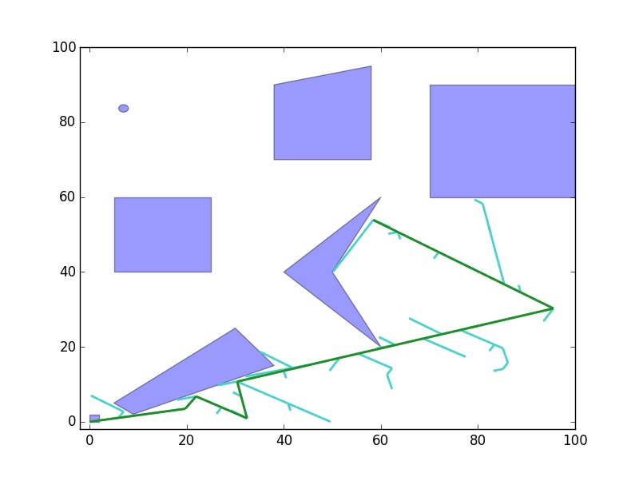
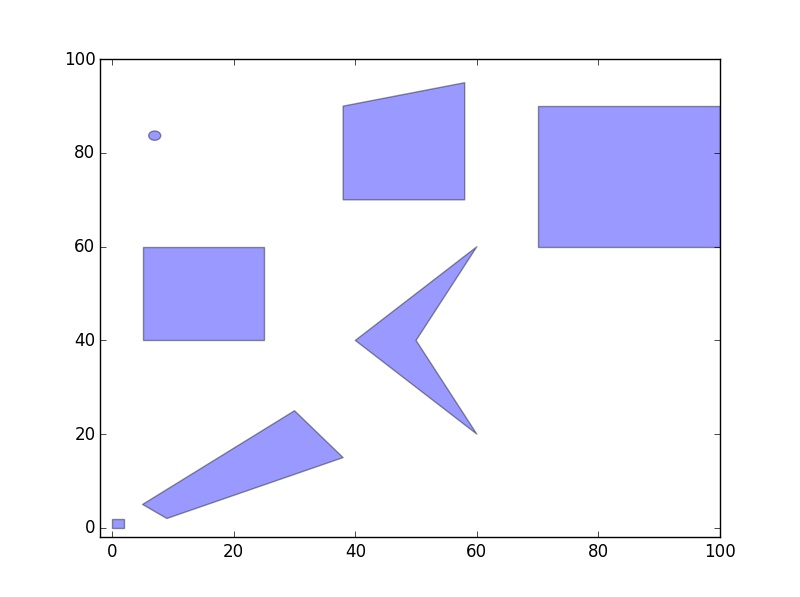
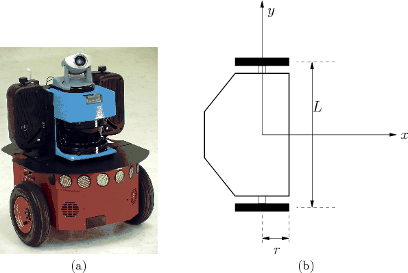
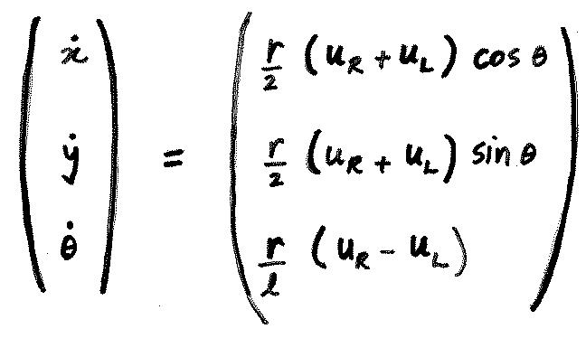
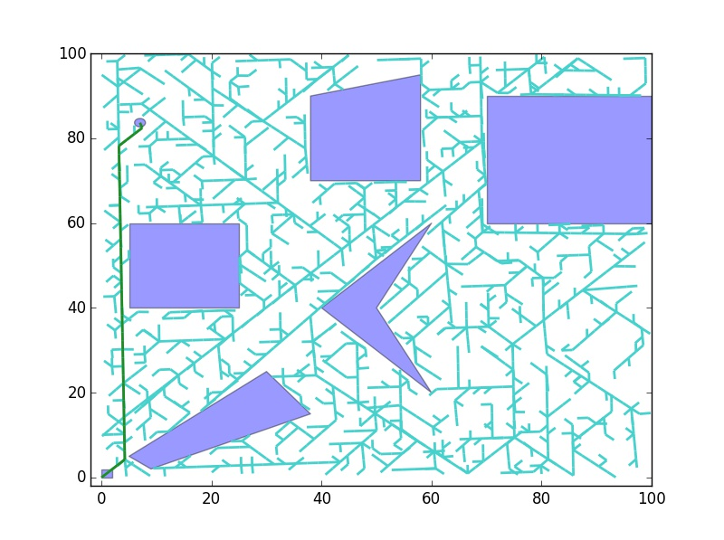

Robot with initial orientation as 10 degrees.
Introduction.
Problem to be addressed here is to find a continuous, collision free path to bring a robot from an initial configuration to a goal configuration by implementing a path planning system.
Robot Specifications:
- Type of Robot model: Differential Drive.
- Type of Motion model: Non - Holonomic.
- Type of Environment: 2-D with polygonal obstacles. 
- Collision Detection method: Used Shapely collision detection library.
- The motion planning algorithm used: Rapidly exploring Random Tree (RRT).
With radius of wheels as 'r' and distance between wheels is 'L'.
Differential constraints for the Non-Holonomic robot model:
Code Description
RRT Non Holonomic Generator:
def nearest(pt, randpt):
- Parameters: List of tuples which are Points and a tuple which is a randomly generated point.
- Finds the nearest point to "randpt" among the set of points and returns it.
- Returns: A tuple which is point nearest to "randpt".
Main Method:
This part of the code does the Main part of the algorithm of Building RRT, finding shortest path from intial to goal configuration. Also plotting the environment with the shortest part found.
Runge - Kutta 4th order calculation:
def __init__(self,pt,ul,ur):
- Parameters: Point 'pt', Left wheel velocity 'ul', Right wheel velocity 'ur'.
- Initialization of step size, epsilon, radius of wheel, length of axel with above parameters is done in this method.
- Returns: None.
def function(self,left_vel,right_vel,q_theta):
- Parameters: Left wheel velocity 'left_vel', Right wheel velocity 'right_vel', Theta value 'q_theta'.
- This is a function to compute the state transition equations of differential drive.
- Returns: An array consisting of x_dot, y_dot and theta_dot computed values.
def calculate(self,left_vel,right_vel):
- Parameters: Left wheel velocity 'left_vel', Right wheel velocity 'right_vel'.
- This is the main function in which Runge - Kutta 4th order calculation is done.
- Returns: A tuple consisting of point obtained after integration.
def runge_kutta(self):
- Parameters: None.
- It calls the calculate method for three diffrent motions straight, left, right.
- Returns: An array of three tuples each corresponding to a motion as above.

Graph Datastructure:
Class Vertex: def __init__(self,name,point):
- Parameters: Name of the vertex and the point.
- Used to create a vertex by giving it a name and storing its point as a tuple.
- Returns: None.
def addEdge(self,srcpoint,destpoint):
- Parameters: Source point, destination point.
- Adds an edge from the source point to the destination point to the graph.
- Returns: None.
def shortestPath(self, startPoint):
- Parameters: Source point.
- Updates the vertexmap dictionary with the shortest path from source to every other vertex.
- Returns: None.
def printShortPath(self,destpoint):
- Parameters: Destination point.
- Starts from the destination point and backtracks to find the shortest adjacent vertices to reach source vertex.
- Returns: An array of tuples which represent the shortest path.
Results
Information about the figures:
- Voilet square as shown in the environment refers to the initial configuration.
- Goal configuration is represented by a voilet circle.
- Lines in light blue color represent the RRT generated
- Lines in green color represents the continuous, collision free path obtained from initial to goal configuration.
- Other voilet polygons are the obstacles in the environment.
For 10000 random points, path found.
For 20000 random points, better path found.
Robot with initial orientation as 90 degrees.
